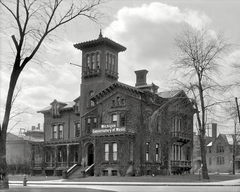

Very few cities are planned. Typically, a few early settlers locate at a spot that has a transportation advantage or is close to a resource that may be extracted from the ground. If there is economic success, more settlers arrive and build their homes and facilities nearby in a haphazard manner long before any local government is established to do city planning. That was the case for Detroit in the Eighteenth Century, although the threat of Indian violence kept the French settlers close to the fort or the river. The Nineteenth Century was different.
Detroit was a small village in the remote wilderness when, in spring 1805, Thomas Jefferson appointed William Hull to serve as governor of the territory and Augustus Woodward as the first federal judge. Woodward arrived in Detroit in late June 1805. Unfortunately, almost all of the wooden structures that comprised the small hamlet of Detroit had burned to the ground on June 11, 1805 in a fire that started in the bakery run by John Harvey and quickly spread by wind. Presumably, the total settlement included fewer than one thousand residents. The first federal census in 1820 counted 2,200. The leading Detroit figure in 1805, Father Gabriel Richard, did what he could to obtain support from the French settlers who lived on the other side of the Detroit River and along the shores of the River Raisin.
NOV-1
2015
Grand Circus Park Historic District

NOV-1
2015
Placeholder
Very few cities are planned. Typically, a few early settlers locate at a spot that has a transportation advantage or is close to a resource that may be extracted from the ground. If there is economic success, more settlers arrive and build their homes and facilities nearby in a haphazard manner long before any local government is established to do city planning. That was the case for Detroit in the Eighteenth Century, although the threat of Indian violence kept the French settlers close to the fort or the river. The Nineteenth Century was different.